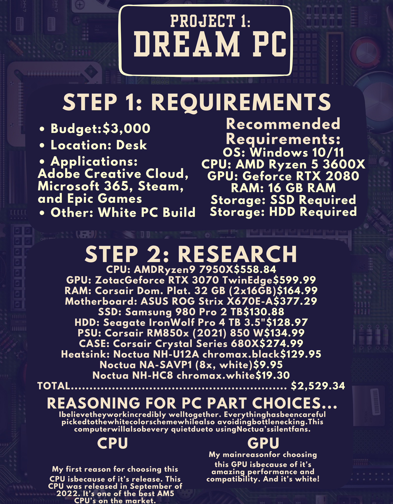

For our first project, I was tasked to research PC parts to build my own computer. First, I had to identify how I was going to use the computer. In my case, I planned to write programs, design models using CAD, and play videogames with this computer. After identifying my needs, I decided to research individual parts to custom build my PC. This research can be found in the Google Doc below! Finally, I created a one-pager about the PC I created.
Here is the one-pager I created for the project.
By completing this project, I learned how to research PC parts and check for compatability. As an added bonus, I also learned how to use Canva to create posters.
I think the poster turned out awesome! In addition, I was able to convince my wife to let me purchase the PC parts and build the computer, which has been working great.
Because the graphics card I selected supports high resolutions than the monitors I have support, I will need to purchase new monitors. I did not factor this in to the original budget, so it will be an additional cost at a later date!
BACK